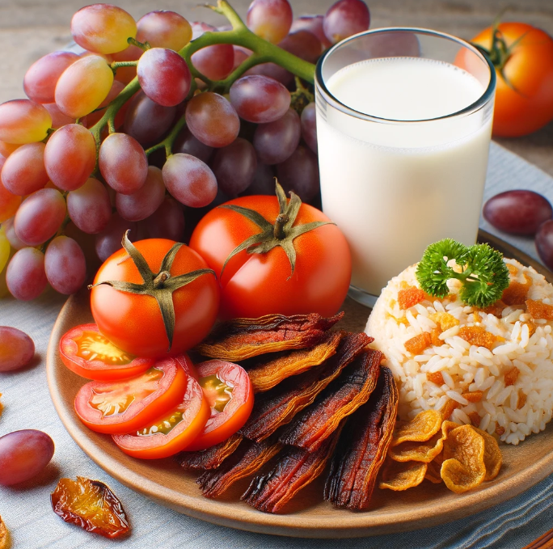

Grapes, Toasted Dried Danggit with Tomatoes, Fried rice, and Fresh Milk.
Ingredients
- 2 pieces dried danggit (around 30g total)
- 1 medium tomato (approximately 120g)
- 1 tablespoon olive oil
- 1/4 teaspoon salt (or to taste)
- 1/4 teaspoon black pepper (or to taste)
| Nutrition Facts |
Grapes |
Fried Rice (1 cup/198g) |
Fresh Milk (1 cup/240ml) |
Other |
| Calories |
104kcal |
300-400kcal |
152kcal |
200kcal |
| Protein |
1g |
6-16g |
8.1g |
18g |
| Fat |
0.2g |
5-10g |
8g |
10g |
| Carbohydrates |
27g |
45-55g |
12g |
10g |
Meal Procedure
- Heat olive oil in a pan over medium heat.
- While the oil is heating, slice the tomato into wedges or your desired shape.
- Add the dried danggit to the pan and toast for 1-2 minutes per side, or until slightly golden brown and heated through. Be careful not to burn them.
- Add the sliced tomatoes to the pan and cook for another 1-2 minutes, or until softened slightly.
- Season with salt and pepper to taste.